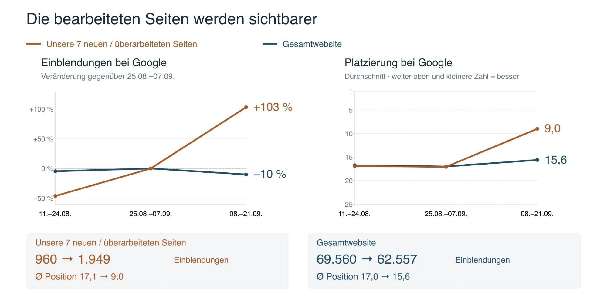

Capital Aesthetics · SEO & GEO
Update: Was wir erreicht haben und wie es weitergeht.
Was umgesetzt wurde, wie sich die bearbeiteten Seiten entwickeln und welche Schritte als Nächstes anstehen.
24. September 2026 · Vorbereitet für Capital Aesthetics
Inhalt
Seiten, Bausteine, Gestaltung, Off-site und die Zahlen aus der Search Console.
02 Wie es weitergehtDie nächsten Schritte und die Instagram-Inhalte für die Seiten.
03 Plastische ChirurgieBrust und Nase: Ausgangslage, Wettbewerb und was zählt.
04 Meta Ads ProposalAnsatz, Aufbau und Zusammenarbeit.
Kapitel 1
Umsetzung und Zahlen
SEO & GEO Update
Was umgesetzt wurde
So stehen die Behandlungs- und Arztseiten heute.
- VOLNEWMER
- CO₂-Laser
- miraDry
- Arztseiten (5 Profile)
- Ultherapy PRIME
- Sculptra
- Preservé
- XERF
- Préime DermaFacial
Interne Verlinkung
Zu jeder Seite gehören auch kleine Anpassungen auf anderen Seiten: Verlinkungen, die Google zeigen, welche Seiten Priorität haben.
Ausgangspunkt: Roadmap Monat 1 im SEO-Plan
Neue Bausteine für die Seiten
Wiederverwendbare Elemente, die auf jeder neuen Seite eingesetzt werden können.
- Instagram-Slider: bereit, für jede neue Seite
- Doctor-Slider: bereit, kommt auf neue Seiten
- FAQ
- Facts, Ablauf, Preise, CTA: waren schon vorhanden, jetzt überarbeitet
- „Warum Capital Aesthetics“: erste Version, noch nicht final
- Vorher/Nachher: noch nicht vollständig gebrieft
- Reviews-Section
Zu besprechen: Bedarf für die Startseite und „Über uns“.
Aus Gestaltungssicht noch offen
Aus Gestaltungssicht sind außerdem noch offen:
Die Startseite
„Über uns“
Die Einbindung von Patientenbewertungen
Optimierung für Mobilgeräte
Das neue GA-Setup zeigt: 85 % kommen über Mobilgeräte. Deshalb machen wir die Seiten kompakter, zum Beispiel mit den neu gestalteten Accordions.
Gestaltungsreferenz: Facelift-Seite der Cadogan Clinic
Off-site
Die Einträge außerhalb der Website.
- Google Business Profile: Services aktualisiert
- Bing / Microsoft Places: synchronisiert
- Apple Business Connect / Apple Maps
- Weitere Plattformen

Kapitel 2
Wie es weitergeht
SEO & GEO Update
Wie es weitergeht
Die bearbeiteten Seiten bewegen sich in die richtige Richtung. Jetzt geht es darum, die nächsten Verbesserungen schneller auf mehr relevante Seiten zu bringen. So gehen wir weiter vor:
Vorhandene Inhalte auf die passenden Seiten bringen
Überall, wo wir relevante Instagram-Beiträge oder Videos haben, können wir diese einbinden. Dazu kommen authentische Einblicke in die Praxis und die Räumlichkeiten.
Slider für Videos und Instagram-Beiträge
Die behandelnden Ärzte sichtbarer machen
Die Arztprofile auf möglichst vielen passenden Behandlungsseiten integrieren, jeweils dort, wo die Zuordnung stimmt und die Einbindung freigegeben ist.
Slider zur Einbindung der behandelnden Ärzte
Die Inhalte weiter überarbeiten
Das bleibt der aufwendigste Teil. Dabei bearbeiten wir zusammenhängende Themenbereiche vollständig: Behandlungsseiten, Alternativen, Vergleiche und häufige Fragen. Entscheidend sind relevante, eigene Inhalte, die unsere Behandlungserfahrung und ärztliche Expertise zeigen.
Der Prozess für die Überarbeitung ist bereit
Vergleichstabellen, die verschiedene Behandlungen und ihre Unterschiede gegenüberstellen
So können wir vorbereitete Bausteine bereits breiter einsetzen, während die ausführlichen Überarbeitungen weiterlaufen.
Instagram-Inhalte für die Seiten
Was die Instagram-Auswertung zu den Behandlungen ergeben hat (Tabelle scrollbar).
| Seite | Capital Aesthetics | Dr. Katharina | Davon Videos | Slider-Stand / Einschätzung |
|---|---|---|---|---|
| Aktuelle Seiten | ||||
| miraDry | 20 | – | – | 8 Karten final: 4 Videos, 3 Prozessbilder, 1 Datenkarte |
| CO₂-Laser | 55 | 4 | – | 5 Karten ausgewählt, 6 visuelle Kandidaten |
| Ultherapy PRIME | 17 | – | – | 11 Videos heruntergeladen und transkribiert, 5 bis 6 davon für den Slider |
| Sculptra | 10 | 3 | – | 4-Karten-Konzept, 6 Videos liegen lokal vor |
| VOLNEWMER | – | – | – | Kein Scrape-Pool nötig, 4 Karten |
| Preservé / Motiva | – | 8 | – | Ansatzpunkte vorhanden, noch keine freigegebene Galerie |
| XERF | 0 | – | – | Noch keine verwendbaren Slides (7 Erwähnungen in Kommentaren auf 4 Posts) |
| Préime DermaFacial | 0 | – | – | Keine exakten Treffer, 45 zu HydraFacial und Verwandtem, noch keine belastbare Auswahl |
| Weitere Behandlungsseiten | ||||
| Abnehmspritze | 1 | 28 | 13 | Viel Doctor-Content, aber medizinisch stark prüfen |
| BBL HEROic | 40 | 2 | 16 | Sehr guter Pool, 4–6 Slides |
| Botox | 100 | 7 | 42 | Sehr viel Material, aber stark kuratieren |
| EMFACE | 9 | 0 | 3 | Dünner Pool, ca. 3–4 Slides |
| EMSCULPT Neo | 30 | 0 | 13 | 4–5 Slides möglich |
| Endolift | 16 | 0 | 8 | Gute Basis für 4–5 Slides |
| Fraxel DUAL | 20 | 3 | 10 | Guter Pool, 4–6 Slides |
| HydraFacial / DermaFacial | 44 | 1 | 14 | Gute Basis, Préime DermaFacial selbst nicht eindeutig gefunden |
| Hyaluron / Filler | 101 | 32 | 47 | Nur nach Unterthemen aufteilen |
| Kryolipolyse / CoolTech | 20 | 0 | 5 | 4–5 Slides möglich |
| LPG Endermologie | 8 | 0 | 2 | 3–4 Slides möglich |
| Morpheus8 | 27 | 0 | 11 | Gute Basis für 4–6 Slides |
| Polynukleotide | 17 | 3 | 13 | Starker Pool, 4–6 Slides möglich |
| Potenza RF | 3 | 1 | 0 | Zu wenig Videomaterial |
| Primelase / Laserhaarentfernung | 9 | 0 | 2 | 3–4 Slides möglich |
| Radiesse | 1 | 0 | 1 | Zu wenig Material, kein Slider priorisieren |
| Secret RF / Secret PRO | 2 | 0 | 1 | Noch nicht ausreichend |
| Sofwave | 28 | 0 | 18 | Sehr guter Video-Pool |
| Thermage FLX | 19 | 1 | 3 | 4–6 Slides realistisch |
| Tixel | 9 | 0 | 3 | 3–4 Slides möglich |
Basis: 494 Beiträge von Capital Aesthetics und 500 von Dr. Katharina. Treffer aus Beschreibungen und Hashtags, keine freigegebenen Slides. „–“ = keine Angabe. Bei Botox und Hyaluron sind die Treffer überwiegend Vergleichs- oder allgemeine Beauty-Posts, die Slider-Größe folgt daher den Unterthemen.
Kapitel 3
Plastische Chirurgie
SEO & GEO Update
Plastische Chirurgie
Strategisch wichtig, auch wegen der neuen Ärzte.
Bestehende Patientinnen
Wir erwarten, dass der größte Teil des Geschäfts von Patientinnen kommt, die wegen anderer Behandlungen ohnehin bei uns sind, und weniger über Seiten.
SEO als gezielter Test
Brust und Nase sind jetzt eigene Cluster. Wir bauen dort Themenautorität und ärztliche Inhalte auf, messen Klicks und Positionen und entscheiden danach über die nächsten Schritte.
Paid Social und Paid Search
Laufen bereits über die bestehende Agentur.
Brust und Nase: strategische Wette, harter Wettbewerb
Mit den neuen Ärzten wird plastische Chirurgie zum Kernbereich. Beide Themen sind jetzt eigene Cluster im SEO-Panel, damit wir sehen, wie weit wir kommen.
Brust: Seiten zum Thema
Nase: Seiten zum Thema
Quellen: Search Console Juli 2026 (getrackte Suchanfragen, der Long Tail fehlt); Sitemaps der Berliner Top-10-Praxen, 25.09.2026, inkl. Nachbar-Eingriffen.
Was Google und Patientinnen belohnen
Wettbewerb bis 73 Seiten zum Thema, Capital 7
Titel nennen Facharzt und Name, Video auf 2 von 4 geprüften Brust-Seiten der Wettbewerber
Zertifizierung, Arztprofil und Praxisbilder beim Wettbewerb
Noch nicht gemessen, Linkprofile der Top 10 folgen
Noch nicht gemessen, Vergleich für Brust und Nase folgt
Ranking entsteht über Monate. Wir messen Klicks und Positionen pro Cluster und berichten, wie weit wir kommen.
Kapitel 4
Meta Ads Proposal
SEO & GEO Update
Meta Ads: Ansatz
Der einfachste Einstieg sind die Videos, die es schon gibt.
Kreative
- Vorhandene Videos analysieren und prüfen, welche sich als Anzeige eignen. Videos, die organisch gut laufen, funktionieren oft auch als Anzeige.
- Bei Bedarf das Rohmaterial anfragen, um Videos anzeigentauglicher zu machen.
- Dazu die erklärenden Arztvideos vom Instagram-Profil.
- Einfache Bildanzeigen (Karten), wie viele andere sie einsetzen.
- Eine neue Capital-Aesthetics-Anzeige mit etwas Kante.
Premium-Anmutung
Premium in den Kreativen signalisieren. Sonst passen die erreichte Zielgruppe und das Angebot nicht zusammen.
Optimierungsziel
Optimierung auf gebuchte Termine, nicht auf Sichtbarkeit. Reichweite bringt auf Meta aus unserer Sicht wenig.
Meta Ads: Aufbau und Fokus
Um etwas zu finden, das funktioniert, und es sauber zu testen, ergibt es keinen Sinn, alles auf einmal zu versuchen.
Eigene Seiten
- Mit KI einfache, eigenständige Seiten bauen: schlankere Versionen der Behandlungsseiten.
- Ziel 1: Beratung buchen.
- Ziel 2: E-Mail abonnieren.
Fokus
- 3 Behandlungen gleichzeitig.
- 1 Marken-Kampagne.
Partnership Ads
- Kooperationen und persönliche Accounts nutzen.
- Die Anzeige zeigt den Klinik-Account, den Arzt-Account und bei einer Kooperation möglicherweise den Patientinnen-Account.
- So stärken sie sich gegenseitig.
Erst eine Sache gut machen und dann kopieren, statt zehn Dinge mittelmäßig zu machen und den ganzen Kanal aufzugeben.
Meta Ads: Zusammenarbeit
- 500 € pro Kampagne und Monat, netto.
- 4 Kampagnen: 3 Behandlungen und 1 Marken-Kampagne, zusammen 2.000 € pro Monat.
- Mindestlaufzeit 3 Monate ab Aufbau und Start, danach monatlich kündbar.
- Das Werbebudget zahlt Capital Aesthetics direkt an Meta. Es ist nicht in der Gebühr enthalten.